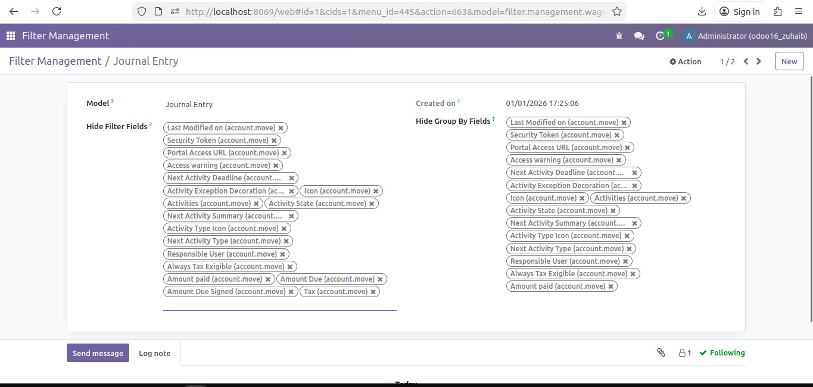
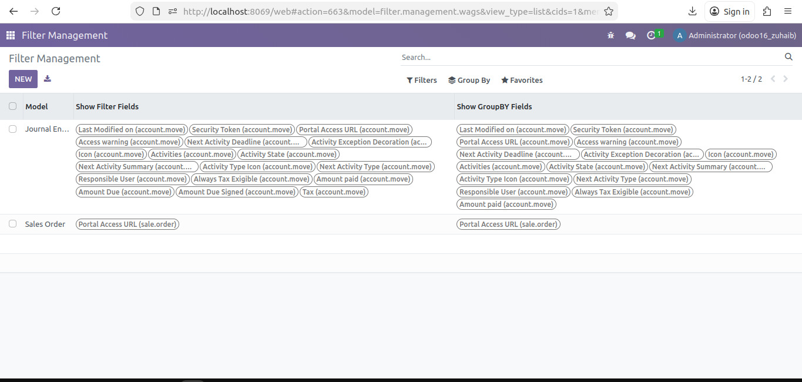
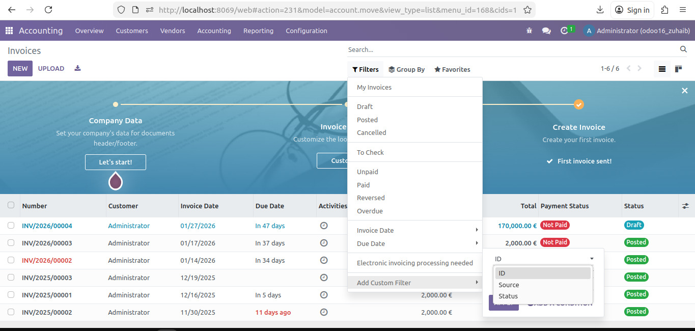
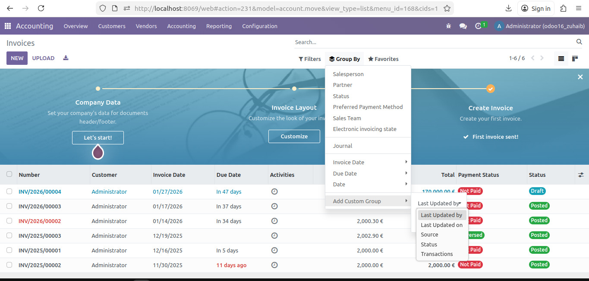

Easily control which fields appear in filters and group by options for any model using a centralized configuration.
All changes are applied automatically in list/tree views, making reporting and data access much easier.


Once filters are applied on a model, only the fields defined in the Filter Management configuration will be available. Fields marked as "Hide Filter Fields" will be automatically excluded.
This dynamic behavior adapts automatically per model based on your configuration, ensuring a consistent filtering experience.
Group By options are dynamically controlled based on the Filter Management configuration. Fields marked as "Hide Group By Fields" will not appear in the Group By dropdown.
Dynamic behavior adapts per model, ensuring consistent grouping options across your application.


All filter configurations are managed from a clean and simple list view for easy maintenance.